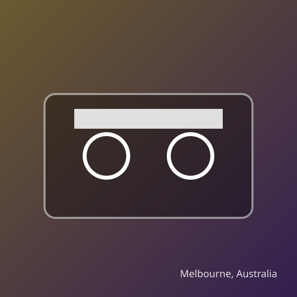

Ernie Althoff's binaural cassettes, Clifton Hill Community Music Centre

Where and when: Melbourne, Australia; Date(s): 1976–83; Medium: Cassette
Music made where it wasn't wanted, and songs that kept the score.

Where and when: Melbourne, Australia; Date(s): 1976–83; Medium: Cassette